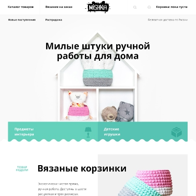
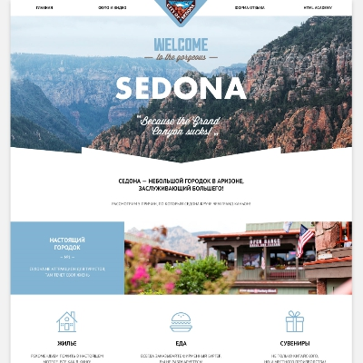
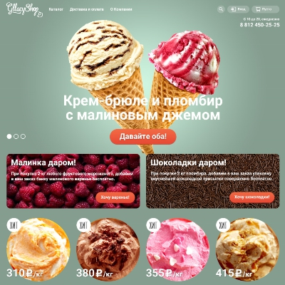
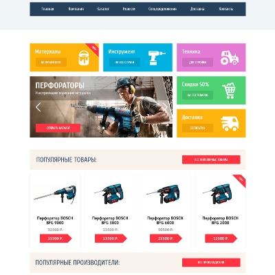
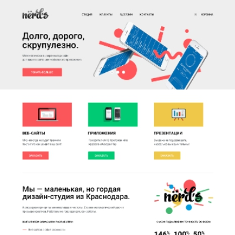

Использую HTML5 для семантичной вёрстки по БЭМ-методологии Яндекса, СSS3 для красивого оформления и анимации. Умею построить сетку страницы без Bootstrap. Пользуюсь Gulp для автоматизации рутинных задач разработки и SASS для написания CSS.
Очень хочу продолжать развиваться как веб-разработчик, и работать над современными, красивыми проектами.
Ниже вы найдёте несколько прошлых моих работ.
Адаптивные сетки на флексбоксах, ретинизация графики, SVG, методология БЭМ. CSS скомпилирован из SASS.
Адаптивные сетки на флексбоксах, ретинизация графики, SVG, методология БЭМ. CSS скомпилирован из SASS.
Адаптивные сетки на флексбоксах, ретинизация графики, SVG, методология БЭМ. CSS скомпилирован из SASS.
HTML5, CSS3, слайдер на CSS, сетки на флоатах и инлайн-блоках
HTML5, CSS3, слайдер на CSS, сетки на флоатах и инлайн-блоках
HTML5, CSS3, слайдер на CSS, сетки на флоатах и инлайн-блоках
Cвязаться со мной:
ВКонтакте Gmail Skype